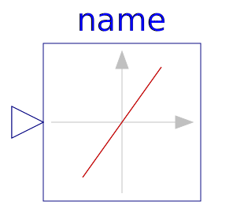
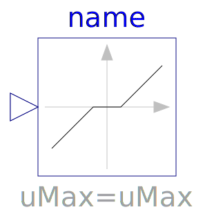
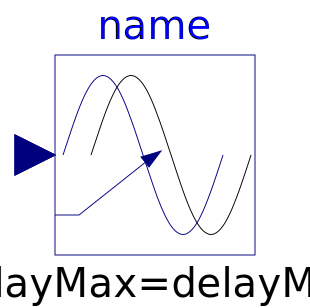

This package contains discontinuous and non-differentiable, algebraic input/output blocks.
| Name | Description |
|---|---|
| Limit the range of a signal | |
| Limit the range of a signal with variable limits | |
|  SlewRateLimiter | Limits the slew rate of a signal |
|  DeadZone | Provide a region of zero output |
| Delay block with fixed DelayTime | |
| Pade approximation of delay block with fixed delayTime (use balance=true; this is not the default to be backwards compatible) | |
|  VariableDelay | Delay block with variable DelayTime |